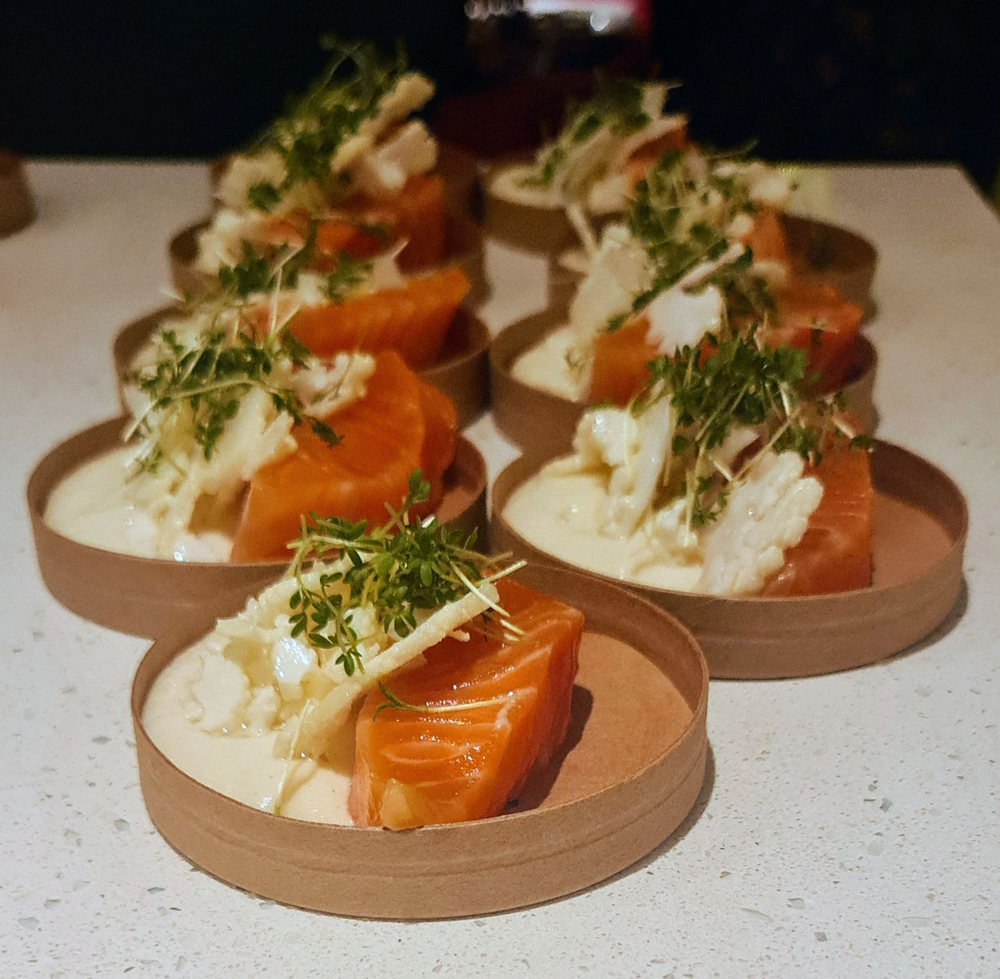

Menukort
Frokost, aften og thai
Alt på kortet kan bestilles som takeaway
Ring 30 80 72 41, så er det klar til afhentning
Har du allergi, siger du bare til. Vi tilpasser gerne retterne
Ring 30 80 72 41, så er det klar til afhentning
Har du allergi, siger du bare til. Vi tilpasser gerne retterne
Frokost
kl. 12–16TilvalgKylling 40,- · Røget laks 40,-
Dagens ret skifter løbende. Se Dagens ret, eller spørg i caféen
Aften
kl. 16–20Rapheephons thai
frokost og aftenLavet fra bunden. Spis her eller tag med

Tag maden med hjem
Ring, bestil, hent på stationen
Tors–lør 12–20 · Søn 12–19 · Ons 16–20Kom bare forbi, ingen bordbestilling